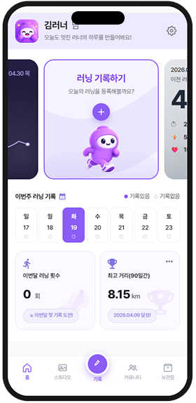
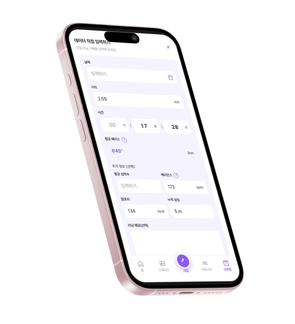

PORTFOLIO
SCROLL

Profile
- 이름
- 유진
- MBTI
- INFP
- MOTO
- 보기보다 본질을 먼저 생각합니다
Contact
- 휴대폰 번호
- 010.2077.4869
- 이메일 주소
- ujin2019@gmail.com
Key Use Tools


Lisence
- 2026.02
- GTQ 포토샵 1급
- 2026.04
- 웹디자인개발기능사 (필기)
Education
- 2026.02-2026.07
- 그린 컴퓨터 아카데미 UIUX 웹퍼블리셔 정규 과정 수료
Skills
- 피그마 컴포넌트를 통한 웹사이트 디자인 레이아웃 구성
- 미리캔버스, 캔바 활용한 카드뉴스 및 상세페이지 디자인
- HTML, CSS 웹사이트 디자인 레이아웃 구현
- Chat GPT / 제미나이 / 미드저니 통한 디자인 소스 생성
- 프리미어프로, 캡컷 활용한 영상 컷 편집
- 파워포인트를 통한 기획안 및 제안서 작성 능력
Experience
- 2023.08 - 2025.05
- (주)청우종합건설 온오프 마케팅 기획 (박람회, 홈페이지, 기업책자, SNS, 광고)
- 2018.09 - 2023.07
- 온라인 판매대행사 류마켓 직접 운영 (소싱, 기획, 발행, 디자인, CS )
- 2021.03 - 2022.01
- 이상한마케팅(주) 프블단 법무법인, 전문직, 교육분야 블로그 글 발행
- 2015.09 - 2016.09
- 본애드컴(주) 아모레퍼시픽, 르노삼성자동차, SK플래닛 Assistant PD
- 2014.08 - 2015.05
- 롯데그룹(주)이비카드 (현.이동의즐거움) Junior Assistant 마케팅1팀 공채
MOODIFY
- Contribution
- 기획, 디자인, 퍼블리싱 개인 100%
- Project Purpose
- 오직 개인의 취향을 반영한 음악 플랫폼으로 트렌디하고 감성적인 디자인 제작
- Font Style
- Pretendard Variable
- Design Color
-
- Tools Used
-
- Generative AI
- Chat GPT 이미지 생성
- Duration
- 2일(집중작업)


JEJU STAY
- Contribution
- 기획, 디자인, 퍼블리싱 개인 100%
- Project Purpose
- 제주의 친환경을 담은 펜션 소개 디자인 및 숙박 예약 가능한 웹사이트 구현
- Font Style
- Pretendard Variable
- Design Color
-
- Tools Used
-
- Generative AI
- Chat GPT 이미지 생성
- Duration
- 2일(집중작업)
LOTTE FESTIVAL
- Contribution
- 기획, 디자인, 퍼블리싱 개인 100%
- Project Purpose
- 봄맞이 쇼핑 할인 대축제를 위한 웹사이트 구현
- Font Style
- Pretendard Variable
- Design Color
-
- Tools Used
-
- Generative AI
- Chat GPT 이미지 생성
- Duration
- 2일(집중작업)

- Contribution
- 기획30%, 디자인 20%, 퍼블리싱 100%
- Design Color
-
- Font Style
- Pretendard Variable
- Generative AI
- Chat GPT 이미지 생성
- Tools Used
-
- Duration
- 5일(집중작업)
위 화면에 마우스를 올리면 페이지가 자동으로 스크롤됩니다.

BEFORE
AFTER
WEB RENEWAL · PUBLISHING
시스템치과 웹사이트 리뉴얼
복잡한 진료 정보를 명확하게, 신뢰를 더한 치과 홈페이지
진료 안내, 의료진 소개, 임플란트·디지털 진료 등 정보가 흩어져 있어 환자가 원하는 내용을 빠르게 찾기 어려웠습니다. 정보 구조를 재정비하고 핵심 동선을 단순화해, 신뢰감 있는 첫인상과 편리한 탐색 경험을 갖춘 반응형 웹사이트로 개선했습니다.
- Type
- 반응형 웹사이트 (리뉴얼)
- Role
- UIUX 디자인 · 웹 퍼블리싱
- Design Color
-
- Built with
- HTML · CSS · JavaScript
- Tools Used
-
- Font Style
- Pretendard Variable


APP DESIGN & DEVELOPMENT
TRACKSY
오늘의 러닝을, 나만의 이야기로
러닝 기록을 한곳에 모으고, 감각적인 러닝카드로 꾸며 저장·공유하는 러닝 기록 앱입니다. 기록 입력부터 주간 통계, 커뮤니티까지 이어지는 사용 흐름을 직접 기획하고 UIUX 디자인과 프론트엔드 개발까지 진행했습니다.
- Type
- 모바일 웹앱 (PWA)
- Role
- 기획 · UIUX 디자인 · 프론트엔드 개발
- Built with
- Next.js · React · Figma
- Design Color
-